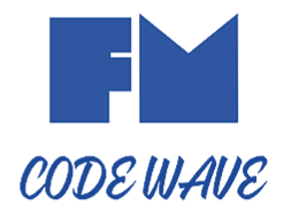

FERNANDO MOREIRA

Meu nome é Fernando Moreira, 39 anos,
casado para sempre com Isabele, pai de duas lindas princesas a
Anthonella e a Yasmim, tambem pai de 3 pet Dandara mestiça de
Akita com Labrador, Tyson um Husky Siberiano muito falador e o
mais novo peralta Tody um shitsu muito roeador de brinquedos e
chinelos.
Apaixonado por música, toco Bateria, Contrabaixo, Violão e Canto
Meu primeiro contato com a Industria foi em 2007, em 2008 tive a oportunidade de me tornar Inspetor de Qualidade na UNIPAC uma empresa do GRUPO JACTO.
Em 2013, 2014 e 2015 tive a oportunidade também de me integrar a unidade Cerâmica e Borracha inspecionando produtos cerâmicos e termofixos.
Em 2023 tive a oportunidade de realizar medições e inspeções em chassi de veiculos eletricos em uma das unidades de negocio do GRUPO JACTO a VEICULOS ELETRICOS.
Em Maio de 2024 tive a oportunidade de me integrar a outra unidade do GRUPO JACTO a SINTEGRA SURGICAL SCIENCIES, uma empresa emergente dos processo da UNIPAC que desenvolve Insrumentação Cirurgica e Implantes denrte outras aplicações.
UNIPAC uma empresa transformadora de produtos plásticos, com processo de Injeção, Extrusão Sopro, Rotomoldagem, Termoformagem, com um portifolio gigantesco de produtos das mais diversas aplicações para os setores Agricola, Energia Solar e Automotivo.
Meu contato + contunde com o GD&T foi em 2010 quando em uma dessas empresa participei do processo de desenvolvimento de um determinado produto de uma renomada montadora a GM.
Treinamentos, trocas de experiências com parceiros de setor dentre eles Vagner Girotto, Vinicius Moares, William Caldeira Engenheiro de produto na UNIPAC com grande experiência por trabalhar com a VOLVO foram dando forma inicial ao conhecimento que hoje possuo e o qual continuo a aperfeiçoar por amar a filosofia GD&T.
Um dos treinamentos que pude fazer que trouxe muita experiência foram o treinamento do nosso amigo André Roberto de Souza, do FORMA3D, quem se tiver a opurtunidade super aconselho e recomendo, um prossional com muita experiência teorica e pratica em GD&T.
Em 2022 depois de uma crise e de um serio problema familiar, pude notar o quanto eu precisava melhorar para trazer sustento e melhor qualidade de vida para a minha familia.
A carreira de Inspetor e Metrolgista em muitos setores ainda é mal remunerada e a aquisição de treinamentos para algumas realidades são inacessiveis devido a falta de recurso de muitos desses profissionais como era e é o meu caso.
Pensando que já fui muito ajudado, onde nesses anos aproveitei a falta de recursos e começei e desenvolver em mim a habilidade autodidata de apresender sozinho com os recursos disponivel.
Sem condições para fazer uma faculdade afim de obter um diploma de nivel superior fui me desenvolvendo conforme as oportunidade iam surgindo.
Em 2017 e 2018 tive a oportunidade de ser comtemplado dentre os funcionarios para cursar o Curso Técnico em Plásticos no SENAI SHUNJI NISHIMURA na cidade de Pompeia-SP.
Neste parentese de experiências profissionais dentro da mesma empresa, fui desenvolvendo habilidades em interpretação de desenhos, habilidades de utilziar Instrumento tridimensionais como Braço tridimensional com software PC-Dimis, Polyworks da Innovemetric, Máquina Tridimensional Mitutoyo com SOftware Geopak e Polyworks CMM, Máquina de medir por coordenadas OTICA OGP com software MeasureMind, Centro Ótico Manual Rasson, dentre tantos outros instrumentos digitais e convecionais como Paquimetros, MIcrometros, Subito, Projetor de Peril, Rugosimetro, Calibradores PNP, Dispositivos GAGE e até MSA ( Análise do Sistema de medição), Minitab, pacote office, dentre tantas atividades adiministrativas da Metrolgia como Análise de certificados de calibração.
Mesmo com tanta experiência o retorno financeiro no trabalho atual sempre foi acirrado com os gastos, nunca superando afim de prover uma qualidade de vida melhor, fiz um Carrer Direct e pude descobrir vocações que estavam adormecidas.
Com minhas hablidades autoditadas tomei a decisão de fazer uma transição de carreira saudavel que começou em 2022 no periodo dificil com minha familia que me deu razões para tomar essa decisão.
No livro de Eclesiastes da Biblía
Sagrada
diz que:
"Tudo tem o seu tempo determinado, e há tempo para todo
o
propósito debaixo do céu.
...tempo de plantar e tempo de arrancar o que se
plantou.
...Que proveito tem o trabalhador naquilo em que
trabalha?"
Unindo os meus conhecimento como
Inspetor e Metrologista e principalmente minha
experiência
em GD&T resolvi unir minhas habilidades em Programação e
criar um conteúdo gratuito de GD&T par ajudar que
precisar
indepedente da profisssão e de suas condições
financeiras.
Mateus 10:8 diz que ...Vocês receberam de graça; deem
também
de graça.
Tenho convicção de que a minha recompensa vem de Deus
que
criou os seus a terra e o mar e tudo o que nela existe!
Dessa brilhante ideia surgiu a
mninha
marca FM CODE WAVE que
é a junação das minha iniciais com a
ideia de onda de códigos das quais estou surfando agora
e
pretendo surfar até a volta de Cristo!
Foram 19 anos com funcionario e não pretendo mais gastar
a
minha preciosa vida enriquecendo os outros e deixando eu
pobre. Tenho sonhos e ambições e pretendo realizar todos
eles antes de Jesus Voltar porque depois a eternidade
Deus
está provendo o que vamos viver lá.
Junto com a FM CODE WAVE
nasceu também a
Geometric.IA de uma
forma bem peculiar e pessoal.
A minha filha mais velha como ainda não sabe soletrar as
palavras com a fonetica correta, ela chama a irmão dela
a
Yasmim Emanuelle de um jeito bem peculiar e carinho:
"Iaminuele".
Eu já estava com a ideia de fazer algo com os
conhecimento
de GD&T que eu tenho ai pensei em criar uma aplicação
web
para entregar conhecimento a quem se interessa e nasceu
então a
GEOMETRIC.IA que é a junção de Geometria com
Iaminuele, junto com isso nasceram mais dois projetos o
do
Site com a tabela de GD&T e IA de reconhecimento de
padrões
geometricos em Python, também nasceu a minha IA pessoal
o
versão do Jarvis do homem de ferro que utilizo em meu
note
para abrir o youtube e ouvir musica acinada por comando
de
voz!
Tenho o meu portifolio web
também, onde concentro todos
os
meus trabalho web e aplicações de programação que vou
desenvolvendo vou inserindo neste portifolio.

Conteúdo técnico em GD&T desenvolvido por Fernando Moreira, baseado em suas experiências como Inspetor de Qualidade e Metrologista desde 2008.
Design e Website desenvolvido por FM-CodeWave (Fernando Moreira), baseado em suas experiências em Programação Web desde 2022.
Copyright © 2024 - Geometric.IA - Todos os direitos reservados.